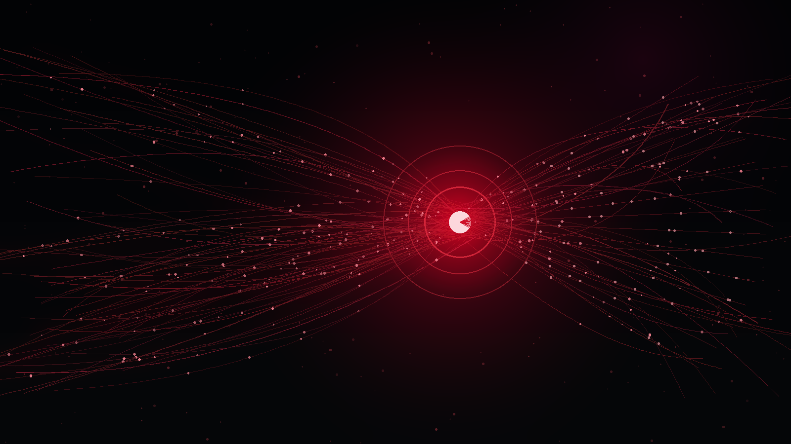

WHY NOW
The signals already exist.
They are just fragmented.
Every day, culture generates millions of clues. Hiffi’s
opportunity is to turn them into one coherent music
graph.
COMMENTS
VIEWS
SHARES
COMMUNITIES
SEARCH
CULTURAL CONVERSATIONS
HIFFI
SIGNAL GRAPH
SIGNAL GRAPH
RISING ARTISTSwho is accelerating
FAN TRUTHwhat audiences feel
OPPORTUNITIESwhere demand is forming
CULTURAL MOMENTUMwhat matters next
AGGREGATE → UNDERSTAND → ACT
Strategic product thesis. Hiffi aggregates public and permissioned signals around music; it does not replace the platforms that generate them.
08 / 10